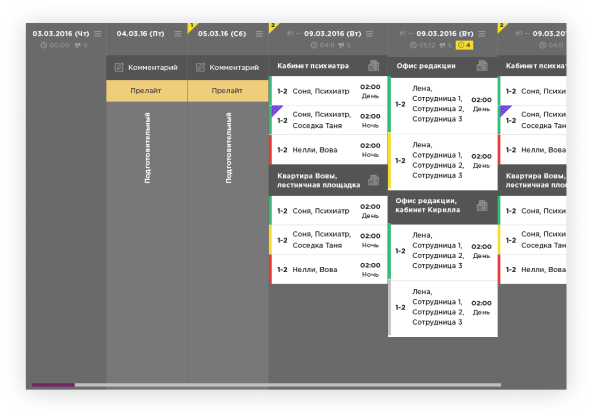
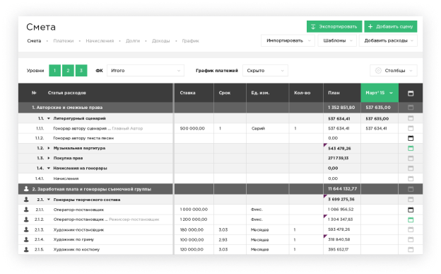

Filmtoolz.ru - сервиса
втоматизации
кинопроизводства
втоматизации
кинопроизводства
Созданный в В 2015 году он стал незаменимым инструментом в
каждодневной работе сотен российских кинокомпаний и в настоящее время
является стандартом работы для всей отрасли.
каждодневной работе сотен российских кинокомпаний и в настоящее время
является стандартом работы для всей отрасли.
-
20 000 +
Пользователей -
10 000 +
Проектов -
8 +
Лет на рынке

Модуль планирования
FilmToolz позволяет систематизировать планирование съемок, автоматически формировать и настраивать всю необходимую в процессе съемок документацию, предоставляет широкий спектр производственных отчетов и дает возможность организовать командную работу над проектом в режиме онлайн.
